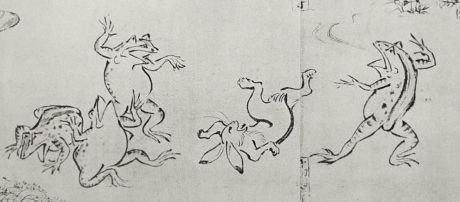
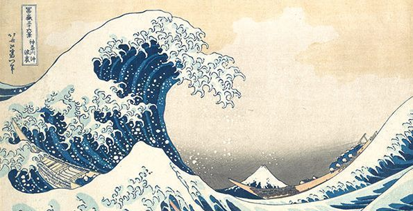
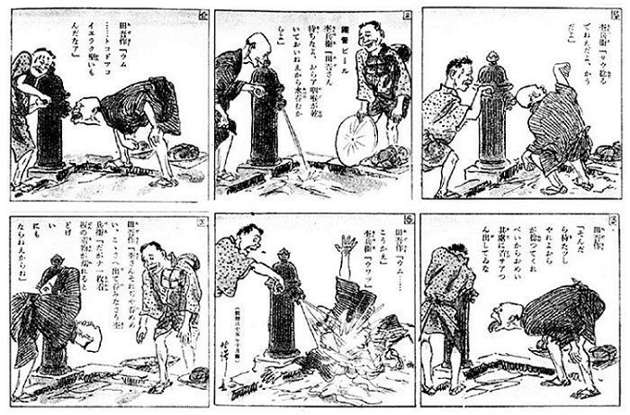
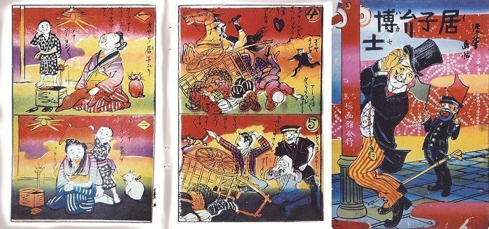
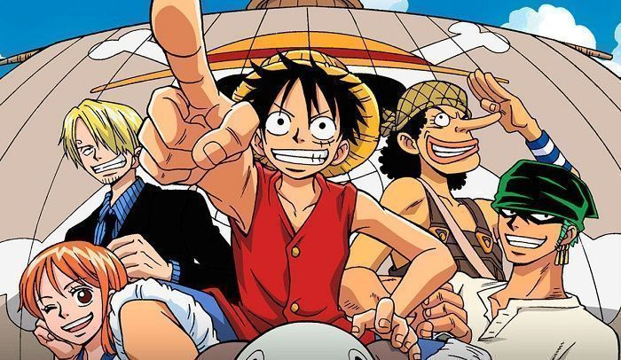

El verdadero origen del anime
El origen del manga como forma de contar historias y definición de la palabra, comenzó durante la segunda mitad del siglo diecinueve y primeros del veinte 1868-1912, en pleno periodo de apertura cultural y económica bajo el mandato del emperador Mutsuhito.
La palabra manga (漫画) está compuesta por dos kanji; man (informal) y ga (dibujo). Literalmente se traduce por dibujos caprichosos o garabatos. Se acuñó este término para definir el arte surgido por la unión del estilo gráfico de la pintura tradicional japonesa y las historietas (cómics) de estilo occidental.
Actualmente, palabra manga se usa en Japón para referirse a “historietas”, de forma general. Fuera de Japón, esta palabra se emplea más concretamente para referirse al estilo japonés de dibujar y contar historias.
Los primeros grabados que muestran un atisbo de estética manga, lo encontramos en la obra Chōjugiga, realizada a mediados del siglo XIII. Son una serie de dibujos con carga satírica representando animales. Están atribuidos a Toba no Sōjō, personaje que vivió en los siglos XI-XII. Sólo se conservan algunos ejemplares en blanco y negro, sin embargo, se ve en ellos una primitiva línea representativa que posteriormente iría evolucionando al manga.
En el período Edo (1603-1868), se desarrolló el movimiento artístico ukiyo-e (grabados de estampas tradicionales japonesas). Estas representaciones gráficas incluían narraciones describiendo lo que en ellas se mostraba. Se pueden comparar remotamente a lo que después sería el género manga.
El máximo exponente de este movimiento artístico es el pintor Hokusai, famoso por sus grabados mundialmente famosos. Además, fue el creador el vocablo manga, escrito en el título de su libro, Hokusai Manga.
El manga en el siglo XX
El dibujante Rakuten Kitazawa, fue el autor de una historieta llamada Tagosaku to Mokube no Tokyo Kenbutsu. Su obra (1902), está considerada oficialmente, como el primer manga de la historia en forma y características similares a las actuales. En él, se narra la historia de dos campesinos que realizan un viaje para hacer turismo en Tokio. Cómo son personajes rurales con poco conocimiento de la vida moderna de la gran ciudad, al llegar, se comportan de forma tonta y cateta.
En los años 20 y 30 del siglo XX, se popularizó el manga orientando a los niños y jóvenes de la época. Fue en este momento cuando se empezaron a exportar fuera de Japón para el consumo genérico como entretenimiento.
Sin embargo, no fue hasta después de la segunda guerra mundial (1945), en plena posguerra, cuando el consumo del manga se generalizó y se estableció firmemente como industria. En esta época, Japón demandaba la necesidad psicológica de mirar hacia otro lado por el sufrimiento padecido años atrás. Esto supuso una oportunidad para el manga, ya que cubria esta necesidad, aparte del bajo coste que suponía adquirir uno en la grave situación económica del momento.
Actualmente, el manga es una de las industrias más importantes de Japón, aunque en los últimos años se ha notado una notable disminución en venta de ejemplares a favor del anime, que está sufriendo un incremento considerable. Culpa de este cambio, tiene que ver con el cambio en los hábitos de la sociedad de consumo, ya que se persigue la inmediatez y facilidad de internet para ver y consumir entretenimiento. En este sentido el anime se ha visto favorecido en detrimento del manga, que genera un esfuerzo mayor para quien desee leer uno.
El manga más vendido de la historia, es One Piece (1997), con más de 406 millones ejemplares vendidos en todo el mundo…de momento.
